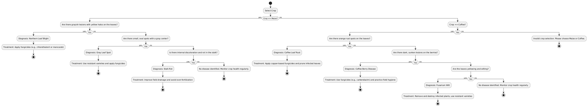

About the Project
This project provides a decision-tree-based approach to diagnosing maize and coffee diseases. Farmers can identify symptoms and get recommendations on how to treat their crops.
Decision Tree Flowchart
Download Report
Click the button below to download the full PDF report.
📥 Download Report